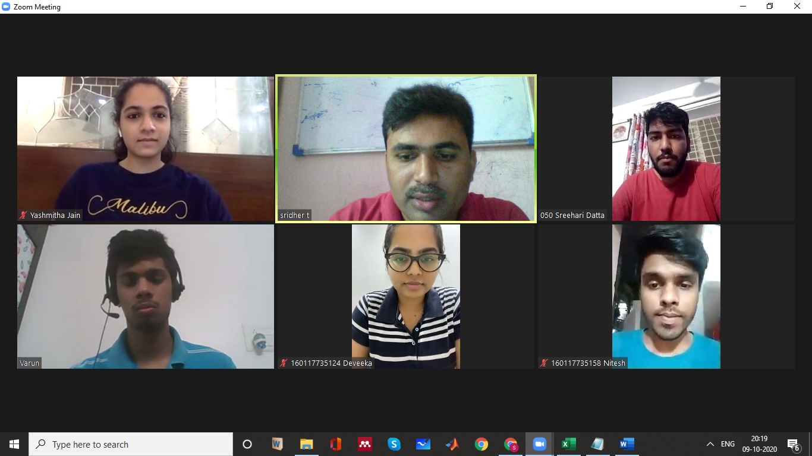
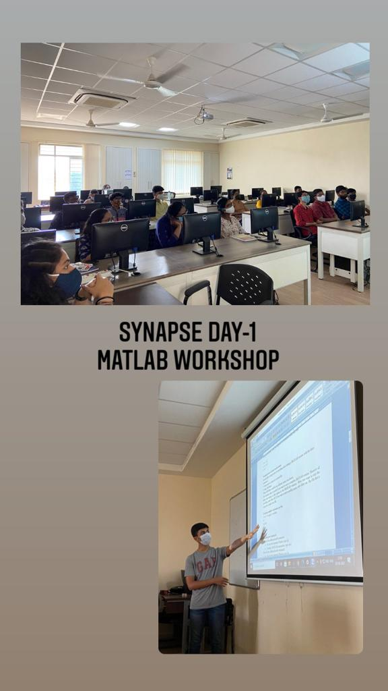
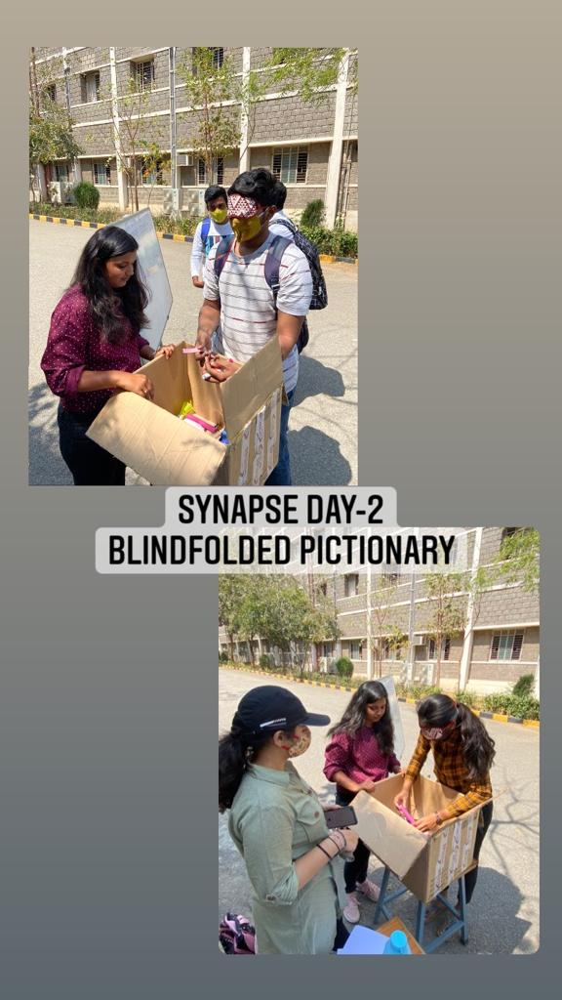

Past Events
Quiz Competition

- Topic: A General Quiz on ‘QFiesta’
- Date: 02/10/2020
- Participants: students from CBIT and other colleges
- Platform: Virtual
- Faculty Coordinators: Sri.T,Sridher, Asst Professor, ECE
Sri.P.Ranjith, Asst Professor, ECE
MATLAB

- Topic: MATLAB Workshop
- Date: 03/03/2021
- Target Audience: 2nd and 3rd year students
- Platform: Offline
- Host: Deveeka Ravi, VIII Sem,Chairman, ISF
Yashmitha Jain, VI Sem, Secretary, ISF
- Faculty Coordinators: Sri.T,Sridher, Asst Professor, ECE
Sri.P.Ranjith, Asst Professor, ECE
Blindfolded Pictionary

- Topic: Blindfolded Pictionary
- Date: 04/03/2021
- Target Audience: All Students
- Platform: Offline
- Host: Deveeka Ravi, VIII Sem,Chairman, ISF
Yashmitha Jain, VI Sem, Secretary, ISF
- Faculty Coordinators: Sri.T.Sridher, Fellow IETE, Asst Professor, ECE
Sri.P.Ranjith, Asst Professor, ECE
Objectives
- Improving standard of Engineering Education
- Counseling the students in the emerging new opportunities
- Encouraging and motivating the outside Class room studies /Work shops/projects/Seminars
- Increasing the student base and Corporate membership of IETE
Activities
- To plan, organize Technical Programs, Special Lectures, Workshops, Seminars Symposia, exhibitions for the benefit of students.
- To provide common platform for students to exchange of ideas in technical topics of interest, e.g., curriculum, employment, higher educational opportunities, emerging trends, etc.
- To facilitate technical visits, project works, employment, contact with industries and academic institutions.
- Encourage team spirit and self reliance among student members.
- ISFs should be a catalyst for the overall growth in technical and professional skills in young students.
Activities
- To plan, organize Technical Programs, Special Lectures, Workshops, Seminars Symposia, exhibitions for the benefit of students.
- To provide common platform for students to exchange of ideas in technical topics of interest, e.g., curriculum, employment, higher educational opportunities, emerging trends, etc.
- To facilitate technical visits, project works, employment, contact with industries and academic institutions.
- Encourage team spirit and self reliance among student members.
- ISFs should be a catalyst for the overall growth in technical and professional skills in young students.